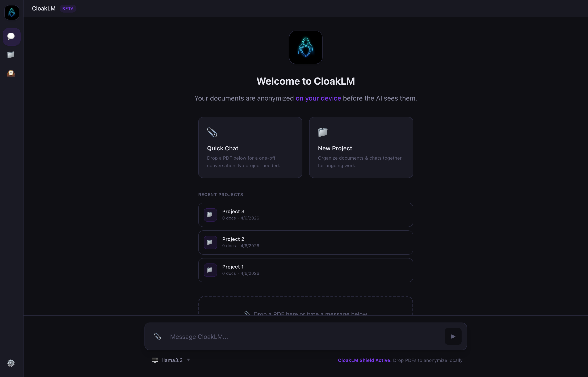
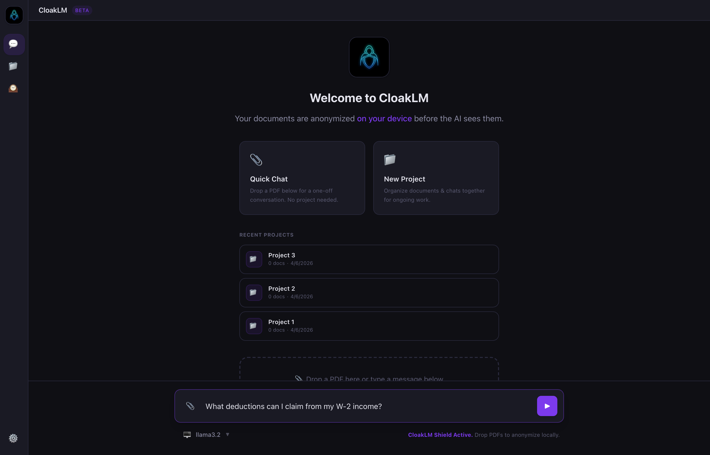
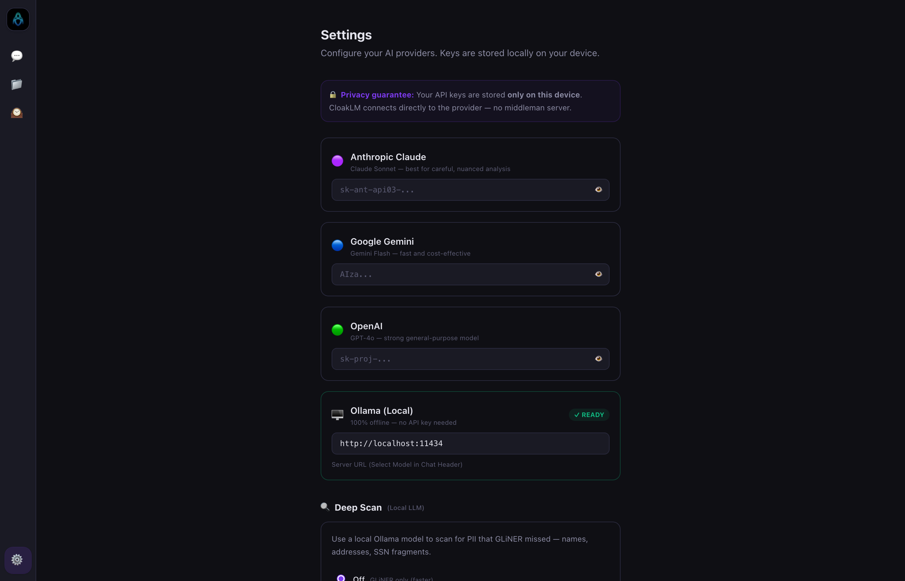

Built for Document Privacy
Every feature designed around one principle: your PII never leaves your device.
Organize Documents & Conversations
Group related PDFs into projects. Start multiple chats against the same document set, and pick exactly which docs provide context for each conversation.
- Create, rename, and manage projects from the welcome screen
- One-click to open a project or jump straight into a chat
- Toggle individual documents in/out of LLM context per chat

Two AI Passes. Zero PII Leaks.
Pass 1 uses GLiNER + IBM Docling to scan locally in seconds. Pass 2 deploys a local Ollama LLM to catch what rule-based models miss — names in unusual formats, partial SSNs, addresses without standard suffixes.
- GLiNER NER + regex patterns for structured PII (SSN, EIN, email, phone, address)
- Optional deep scan with local Ollama model for contextual detection
- Client-side safety net catches anything that slips through both passes

Inspect Every Redaction Before Sending
The Review Panel shows exactly what was redacted and by which pass. Accept or dismiss deep scan suggestions, manually redact additional text by selecting it, and see the raw anonymized output the LLM will receive.
- Provenance badges: GLiNER (auto), Deep Scan (AI), Manual (you)
- Select any text and click "Redact" to add manual redactions
- Search the raw output to verify nothing was missed

The LLM Sees Placeholders. You See Real Names.
When the AI responds, CloakLM replaces [PERSON_1] with the real name on your screen — but the LLM never saw it. Switch between Claude, Gemini, OpenAI, or local Ollama models mid-conversation.
- De-anonymization happens 100% on-device at render time
- Provider badge on every response shows which model answered
- Full conversation history with export to Markdown

Your Keys, Your Models, Your Rules
Connect API keys for Claude, Gemini, or OpenAI — or run fully offline with Ollama. Keys are stored locally on your device and requests go directly to the provider you choose. No middleman server, ever.
- Four providers: Anthropic Claude, Google Gemini, OpenAI, Ollama (local)
- Deep Scan model picker auto-discovers installed Ollama models
- Configurable document storage directory
